Sacha Chauvel
Qui suis-je ?
Je suis actuelement étudiant à l'IUT de Nantes en première année de BUT informatique. Mais je ne suis pas qu'un ermite numérique, je suis aussi grand lecteur et saxophoniste, bien que je n'écoute plus que je ne joue ces dernier temps.
Comme tout jeune de 20 ans, je suis bien entendu joueur de jeu video avec une certaine prédilection pour les jeu de stratégie, bien que j'apprécie tout autant les RPG et parfois même les FPS, bien que je ne soit pas très bon, ils garentissent toujours une bonne tranche de rire entre amis.
Un future developpeur / designeur de jeux vidéo ?
J'aimerais pourvoir plus tard travaillé dans l'industrie du jeux vidéo, que ce soit en dans un studio ou en temps qu'indépendant (et donc d'en vivre), bien que je soit conscient que c'est l'un des rare secteur de l'informatique qui ne recrute que très peu car très demandé, c'est après tout le métier passion du millieu.
J'ai toujours été quelqu'un de très rêveur avec beacoup trop d'idée et pas assez de moyens pour les réalisés mais j'espère qu'un jour je pourrais partager au monde, ces univers dont je rêve.
Quelques projets finis
Projet quadtree
Ce projet a été réalisé avec la colaboration de Léa Cortet, dans le cadre de la ressource R1.01 et de la SAÉ implémentation d'un besoin client SAE1.01. Le but de ce projet étais de créer un mini jeu en vue de dessus en travaillant avec un arbre de donnée "quadtree" pour sotcker la carte du jeu.
Ce projet a été pour moi mon premier gros projet que ce soit en terme de quantité de code ou bien de complexité algorithmique, cela ma notament poussé à apprendre à mieux utiliser git, que ce soit pour retourner en arrière sur d'anciens commits, mais aussi pour un meilleur travail d'équipe. Le projet est d'ailleur disponible sur mon github bien qu'il est été majoritairement developper dans un repositry gitlab privé.
Nous avons bien entendu implémenté certaine des extention demandé comme les portails ou la sauvegarde du monde, mais nous nous somme permis quelques extra quand à la consigne de la génération aléatoire, en effet au lieu de simplement choisir aléatoirement la valeur des tuiles, j'ai choisi de coder un algorithme de génération procedural de donjon.
L'algorithme que j'ai choisi reste assez simple puisque c'est un algorithme basé sur un arbre binaire nommé arbre BSP (Binary Space Partition). J'ai utilisé le site roguebasin comme documentation pour l'implementation de cet algorithme.
Projet brainf
Le but de ce projet étais de créer un interpreteur brainf le plus complet possible en go sans utiliser de documentation autre que sa page de wiki diponible sur esolangs.
C'était un projet assez court (seulement une semaine de developpement), le but étais surtout de me challenger et de revenir sur un defi que je m'étais lancer environ un ans au paravent qui était de faire un interpreteur brainf en C sans documentation, défi que je n'avazis pas réussi à l'époque.
Je ferais une release de ce projet sur mon github quand je serais pleinement satisfait du résultat, j'aimerais en effet paufinié la documentation du projet ainsi que certains tests.
Bot Dofus
Le but de ce petit projet d'été en python était surtout d'évalué à quel point il pouvais être complexe d'automatisé une tache répétitive dans un jeu. Ma conclusion est limpide : c'est très simple à réaliser. Il ne m'a pas fallus plus d'une dizaine d'heure pour coder la base d'un bot simulant le comportement d'un joueur lambda (observation de l'écran, mouvement de souris pseudo réaliste suivant une courbe de bezier), une fois ces fonctionalités implémentés il n'y a plus rien à faire a part déterminé la ressource à récolter.
Cependant les bot soit strictement interdit sur le jeu, j'ai donc limité mes tests à Incarnam, zone de départ du jeu. J'estime que mon bot étais relativement performent pour quelque chose coder en quelques heures, bien que plus lent qu'un joueurs lambda.
Malheureusement les resultat de mes tests n'ont pas de vrai valeurs, en effet suite à mise à jour affectant grandement l'économie, Dofus a connus une grande recrudescence de bots. Ces bots étais bien plus optimisé que le mien puisque leur but étais le profit. Mon bot était donc en concurence face à des joueurs mais aussi face à de vrai bots de ferme à kama (monais du jeu).
Projet Luxo Junior
Ce projet était mon projet de fin d'année de STI2D en SIN. Le but de ce projet était de recréer la lampe Luxo Junior du très célèbre film d'annimation du Studio Pixar présenté en 1986.
Avec trois élève d'ITECH et un autre élève de SIN nous devions recréer la lampe, la motoriser et la faire bouger en fonction des action d'un utilisateur placer devant une camera kinnect.
J'étais personnellement charger d'interpreter le squellette envoyé par l'arduino connecté à la camera, pour faire bouger en conséquances les quatre moteur animant la lampe. Je me suis aussi charger de la communication bluetooth reliant nos deux arduino.
De mes échecs, j'apprend !
GameBoy RPG
Je n'ai jamais vraiment fini ce projet, et bien que je compte me ré-attaqué au game dev retro (que ce soit sur GameBoy ou GameBoy Advence), je pense que je ne retoucherais pas à ce projet.
Bien qu'il ai était très plaisant d'apprendre à compiler pour la GameBoy, les outils et la documentation ont eux beacoup viellis, rendant le processus de création de sprite et tile-map très long et peu pratique. Le manque de documentation du GameBoy devkit a achever ma motivation.

Le projet reste tout de même disponible sur ma page github à titre historique.
Conway Game of Life en C

Ce projet est un de mes tout premier projet "fini", cependant ce dernier est aussi truffé de bug et meriterais un bon nettoyage. Comme son nom l'indique, le but étais recréer le jeu de la vie créer par le célèbre mathématicien Conway. Le jeu de la vie est très certainement l'automate cellulaire le plus connus.
Le code du projet est toujours diponible sur ma page github, bien que je ne garentis pas qu'il soit encore fonctionnel.